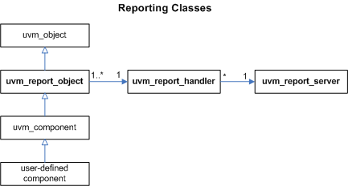

Reporting Classes
The reporting classes provide a facility for issuing reports with consistent formatting. Users can configure what actions to take and what files to send output to based on report severity, ID, or both severity and ID. Users can also filter messages based on their verbosity settings.
The primary interface to the UVM reporting facility is the uvm_report_object from which all uvm_components extend. The uvm_report_object delegates most tasks to its internal uvm_report_handler. If the report handler determines the report is not filtered based the configured verbosity setting, it sends the report to the central uvm_report_server for formatting and processing.
UVM Ref Reporting

Summary
| Reporting Classes | |
| The reporting classes provide a facility for issuing reports with consistent formatting. |